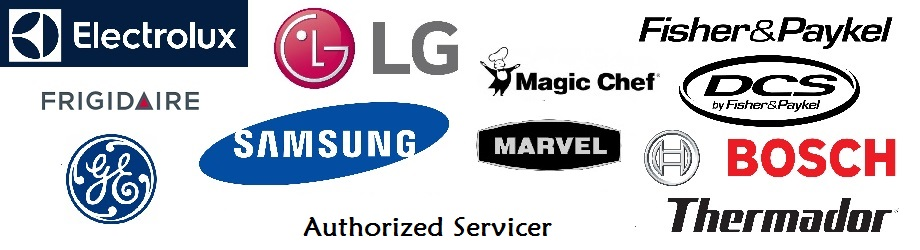
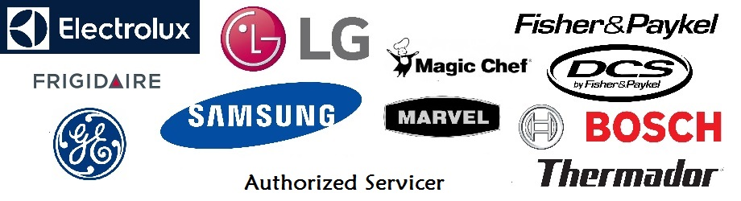

Welcome
This company was started with one goal, to provide the best service for a fair price to consumers in Jacksonville and its surrounding area. Check out the "About Us" section of the site to see what sets us apart from everyone else. If you just want our rates see the "Services" section. "Providing service to people, not just machines." Let us know what we can do to help you.
Our History
Expert Appliance Repair Services, LLC was organized on July 12, 2006, by experienced technicians with many years of experience in the appliance repair industry. One of our goals set forth at the time of organization was to provide the best service for a fair price to consumers in the Jacksonville, Florida, area (including Yulee, Callahan, Fernandina Beach, North St Augustine, Middleburg, and Keystone Heights). As the years have passed, we have increased our knowledge through training and experience of the most current models, as well as the older models, of appliances. We still maintain the objective to provide the best service at a fair price for our customers.
Check out the "About Us" section of the site to see what sets us apart from everyone else. Our rates can be viewed under the "Services" section. "Providing service to people, not just machines." Let us know what we can do to help you.